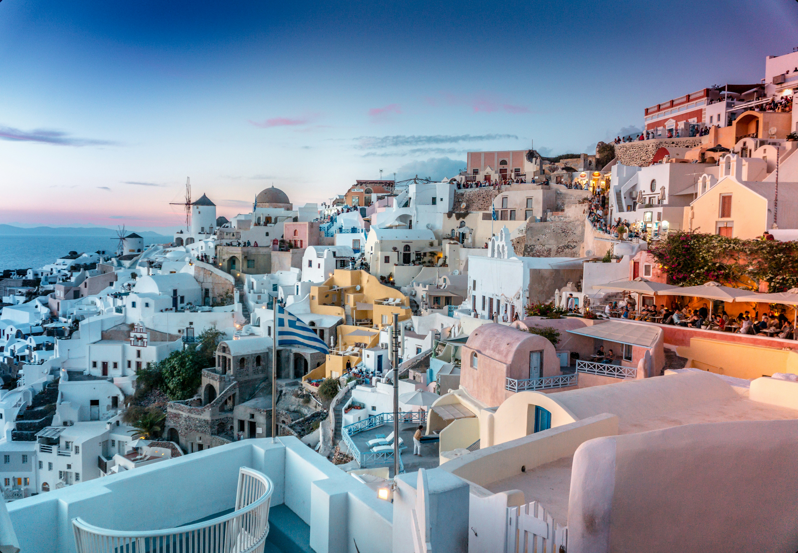
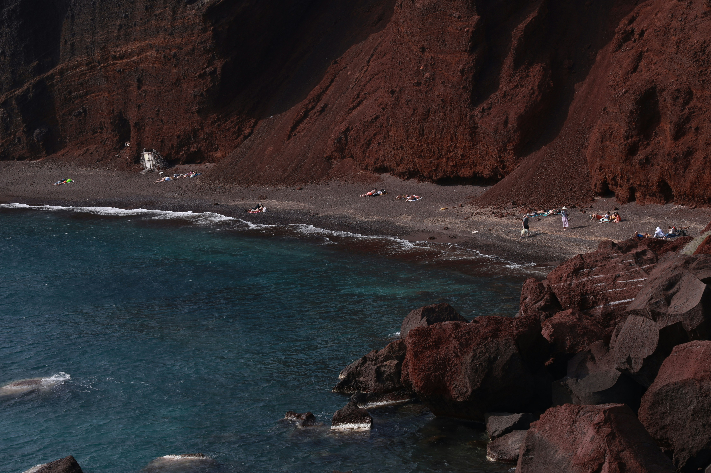
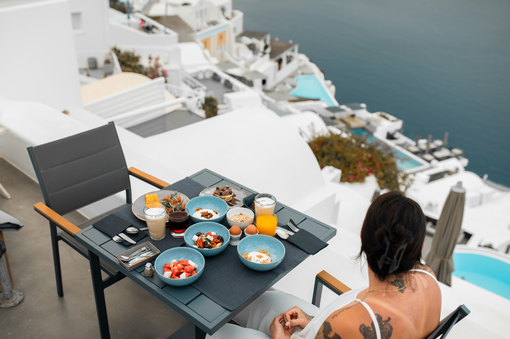
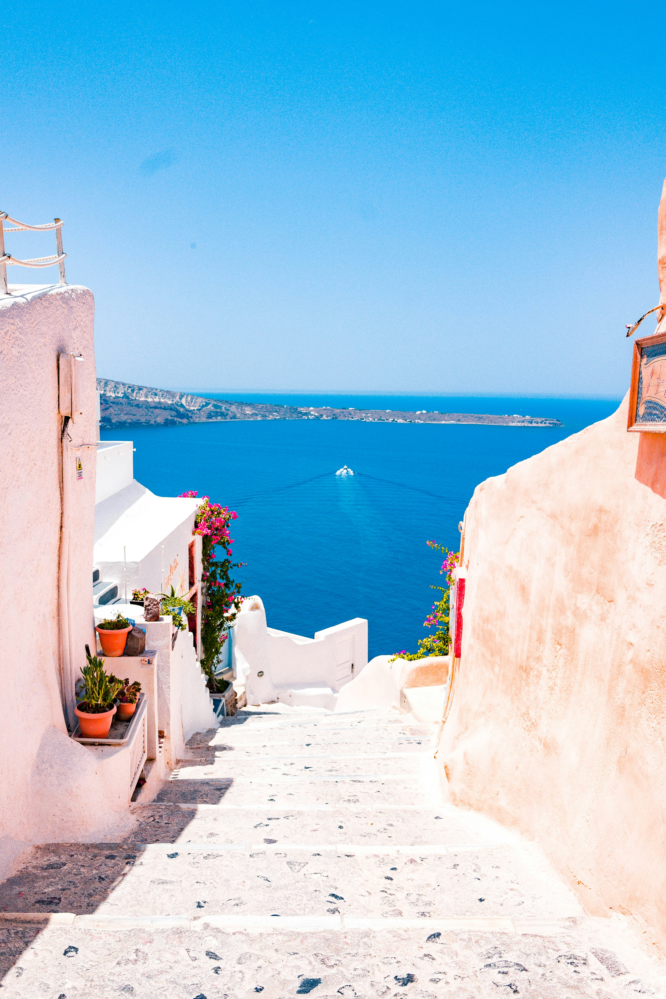
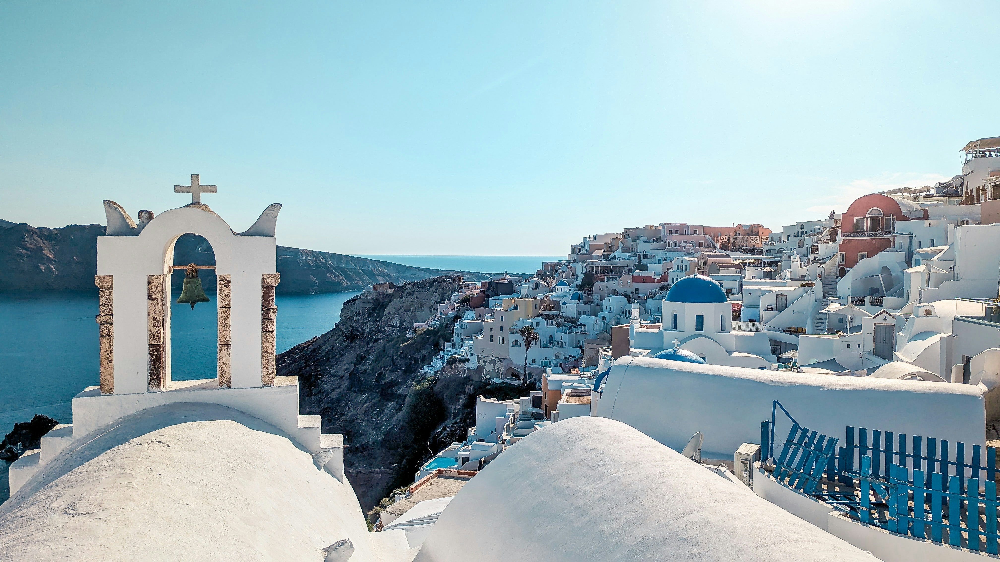
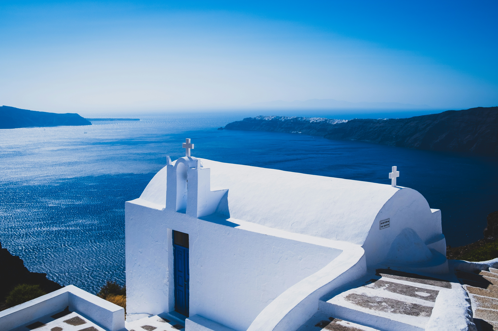
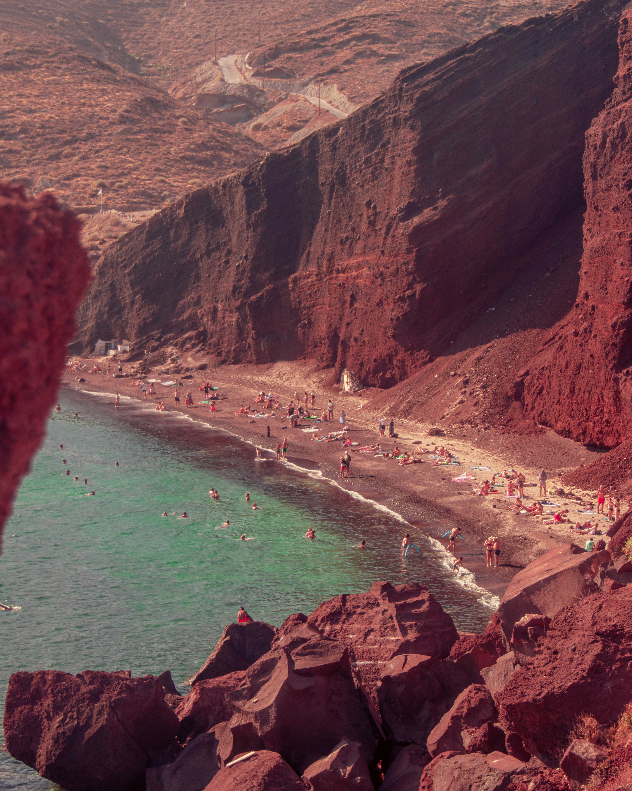
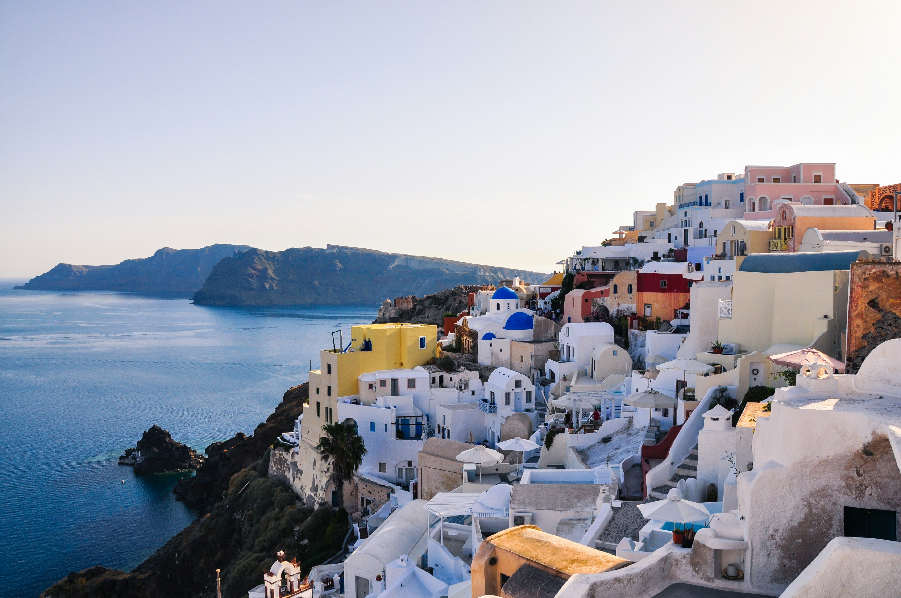

WELCOME TO SANTORINI
Discover the Magic of Santorini
Experience whitewashed villages, iconic blue-domed churches, crystal-clear waters and unforgettable Mediterranean sunsets.
ABOUT SANTORINI
A Paradise of White Villages & Blue Horizons
Located in the Aegean Sea in Greece, Santorini is famous for its dramatic volcanic cliffs, charming whitewashed architecture, beautiful beaches and spectacular sunsets. It is a destination where romance, culture and natural beauty come together.
PLAN YOUR JOURNEY
Santorini at a Glance
A few things to know before you explore.Best Time to Visit
April – October for warm weather, sightseeing and beach experiences.
Currency
Euro (€).
Language
Greek. English is widely spoken in tourist areas.
Famous Experiences
Sunset views, volcanic beaches, boat tours and traditional Greek cuisine.
EXPERIENCE SANTORINI
Things to Do in Santorini
Discover experiences that make every journey unforgettable.Watch Magical Sunsets
Enjoy breathtaking sunsets over the Aegean Sea from Santorini's beautiful cliffside villages.

Explore Volcanic Beaches
Relax on unique beaches with colourful volcanic sand and beautiful coastal views.
Take a Boat Tour
Explore the volcanic islands and enjoy spectacular views of Santorini from the sea.

Enjoy Greek Cuisine
Discover authentic Greek flavours, fresh seafood and charming seaside restaurants.
EXPLORE SANTORINI
Places You Must Visit
Discover the most beautiful corners of Santorini.
Oia
Discover iconic blue-domed churches, whitewashed houses and unforgettable sunset views.

Fira
Explore Santorini's lively capital, filled with charming streets, cafes and caldera views.

Imerovigli
Enjoy peaceful surroundings and some of the island's most beautiful panoramic views.

Red Beach
Admire dramatic red volcanic cliffs meeting the deep blue waters of the Aegean Sea.

Pyrgos
Wander through traditional alleyways and discover beautiful views from this hilltop village.
TRAVEL SMART
Tips for Your Santorini Adventure
A little planning goes a long way.Getting Around
Use local buses, taxis or rental vehicles to explore the island's different villages.
Accommodation
Choose from cliffside hotels, boutique stays and beautiful cave-style suites.
Budget Planning
Book accommodation and popular experiences early, especially during peak summer months.
What to Pack
Carry comfortable walking shoes, sunscreen, sunglasses and light summer clothing.
CHOOSE YOUR SEASON
Best Time to Visit Santorini
Every season offers a different way to experience the island.Spring
March – May
Enjoy pleasant temperatures, blooming landscapes and quieter villages.
Summer
June – August
Experience sunny days, beach activities and lively island life.
Autumn
September – November
Enjoy warm early-autumn days, beautiful sunsets and fewer crowds.
Winter
December – February
Discover a quieter side of Santorini with cooler weather and peaceful villages.
YOUR NEXT ADVENTURE AWAITS